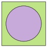
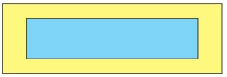
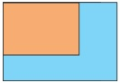

1.
Resuelve los siguientes problemas:
2.
Calcula la longitud de los siguientes polígonos:

3.
Realiza los siguientes ejercicios:
a) La edad de Andrea es el doble que la de Mónica y la edad de Mónica
es el triple que la de Emilia, si entre todas ellas suman 70 años ¿cuál es la edad de cada una?
Andrea tiene
años, Mónica
años y Emilia
años.
b)  En la
siguiente figura se presenta un terreno con forma cuadrada que
dentro tiene una construcción de un edificio que ocupa un área circular. El área del terreno es de
y el área de la base del edificio es de
¿Qué área del terreno aún no ha sido ocupada?
El área del terreno restante es =
c)  El dueño
de una piscina quiere saber cuántos metros cuadrados de
baldosa necesita para cubrir los alrededores de la piscina. Él conoce que el área del terreno que
contiene la piscina y sus alrededores es de
y la piscina mide de ancho y de largo.
• ¿Cuántos metros cuadrados de baldosa necesita?
Necesita
m2.
• Estima ¿Cuántos cajas necesitan si cada caja rinde ?.
Se necesita
cajas aproximadamente.
d)  Una
familia compró un terreno de forma rectangular que tiene un área de
. Dentro del terreno existe una casa en la esquina, que ocupa un área
rectangular como se observa en la imagen. El resto del terreno tiene un área de . ¿Cuál es el área que ocupa la casa?
=
4.
Formen grupos, realicen los siguientes problemas y al final compartan sus respuestas
con los otros grupos: